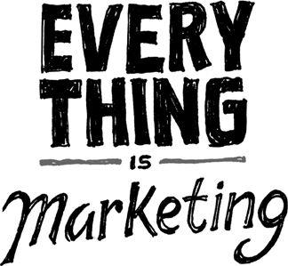

{% include JB/setup %}
{% raw %}
<div>

<h2 id="filepos190783" class="calibre19"><span class="calibre2"><a class="calibre13"></a><strong class="calibre14">Drug dealers get it right</strong></span></h2><div class="calibre4"></div>
<p class="calibre7">Drug dealers are astute businesspeople. They know their product is so good they're willing to give a little away for free upfront. They know you'll be back for more--with money.</p>
<p class="calibre17">Emulate drug dealers. Make your product so good, so addictive, so "can't miss" that giving customers a small, free taste makes them come back with cash in hand.</p>
<p class="calibre17">This will force you to make something about your product bite-size. You want an easily digestible introduction to what you sell. This gives people a way to try it without investing any money or a lot of time.</p>
<p class="calibre17">Bakeries, restaurants, and ice cream shops have done this successfully for years. Car dealers let you test-drive cars before buying them. Software firms are also getting on board, with free trials or limited-use versions. How many other industries could benefit from the drug-dealer model?</p>
<p class="calibre17">Don't be afraid to give a little away for free--as long as you've got something else to sell. Be confident in what you're offering. You should know that people will come back for more. If you're not confident about that, you haven't created a strong enough product.</p>
<p class="calibre3"><a class="calibre16"></a></p><div class="calibre4"></div>
<div class="mbppagebreak" id="calibre_pb_119"></div></div>

{% endraw %}

